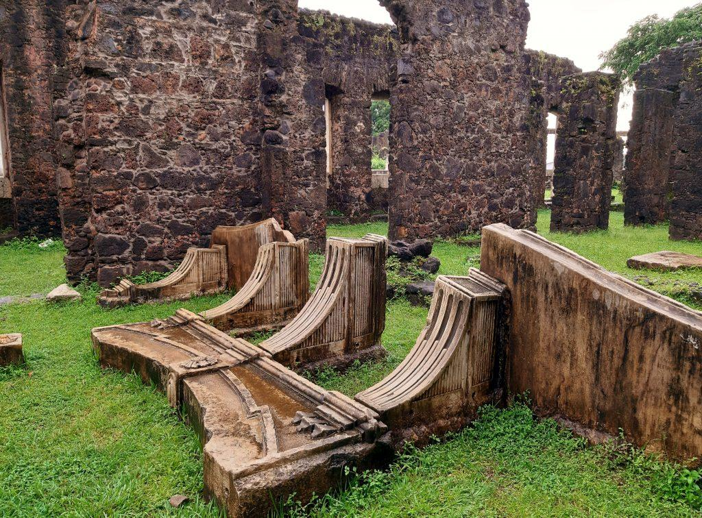

Galeria de Fotos



Minha Experiência
O Maranhão oferece paisagens únicas e uma cultura muito rica. A visita foi marcada por belas praias, culinária típica e lugares surpreendentes.
Pontos Turísticos
- Lençóis Maranhenses
- Centro Histórico de São Luís
- Alcântara